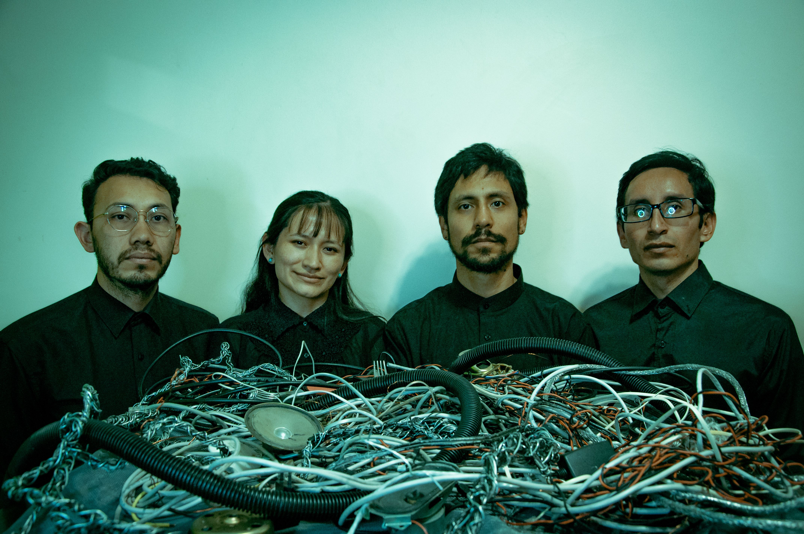
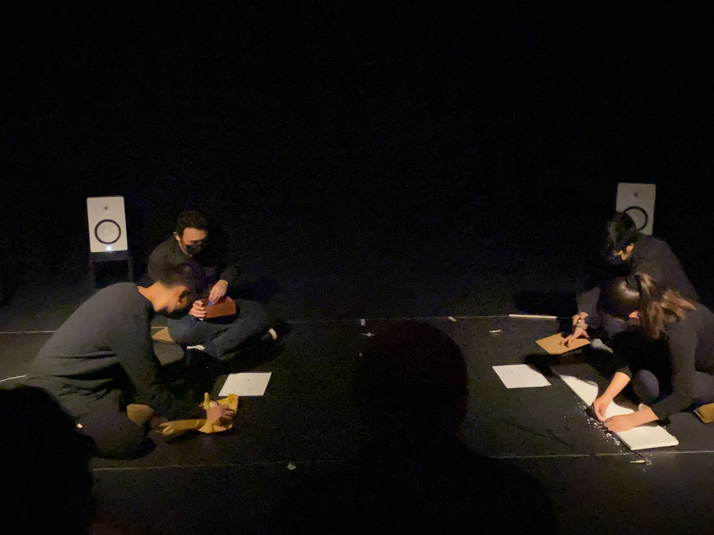
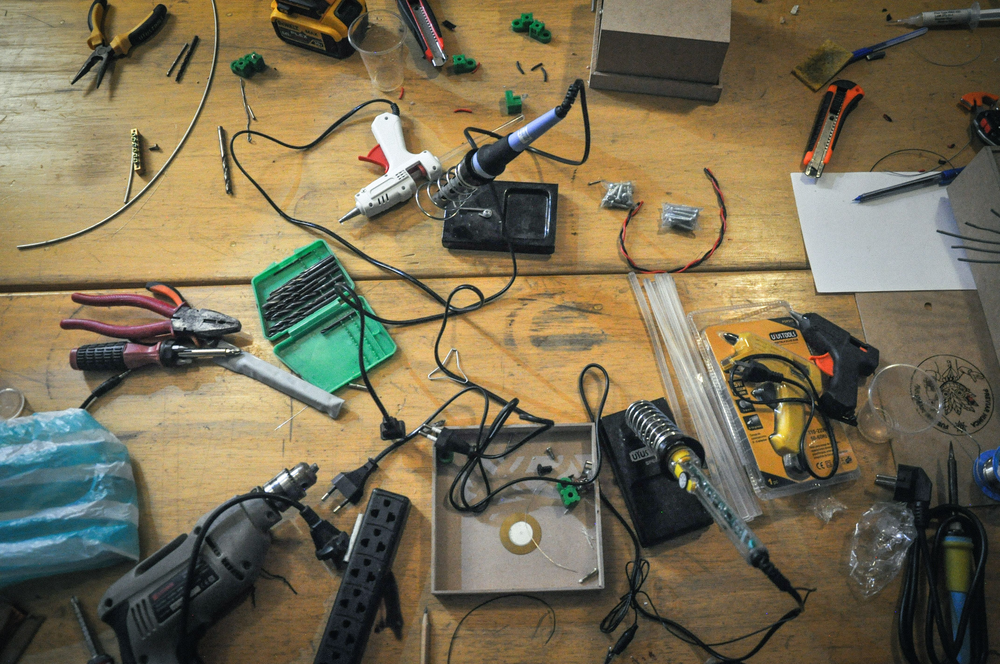
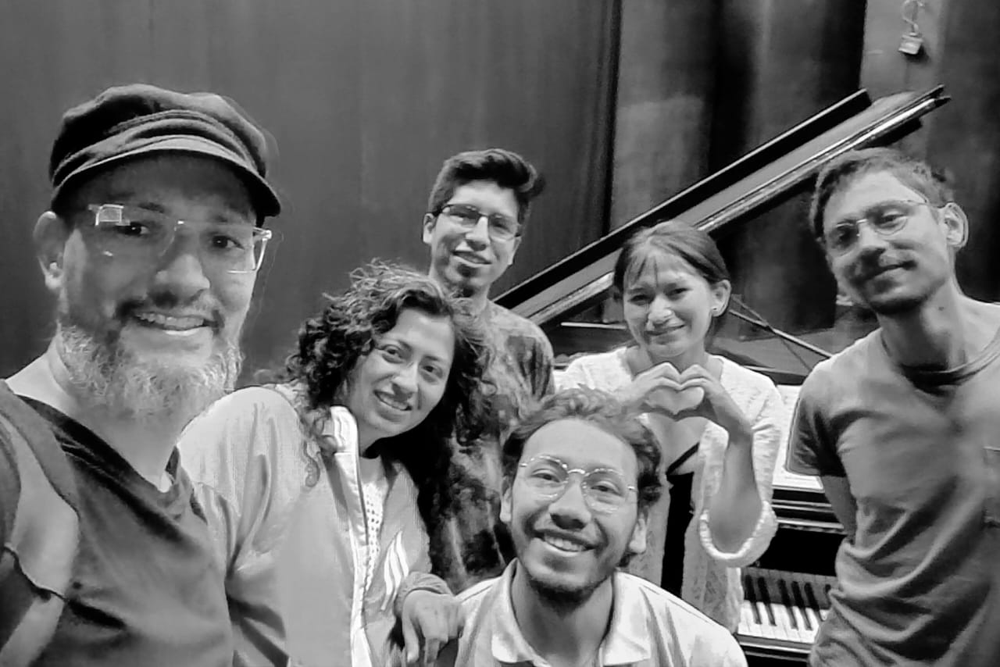
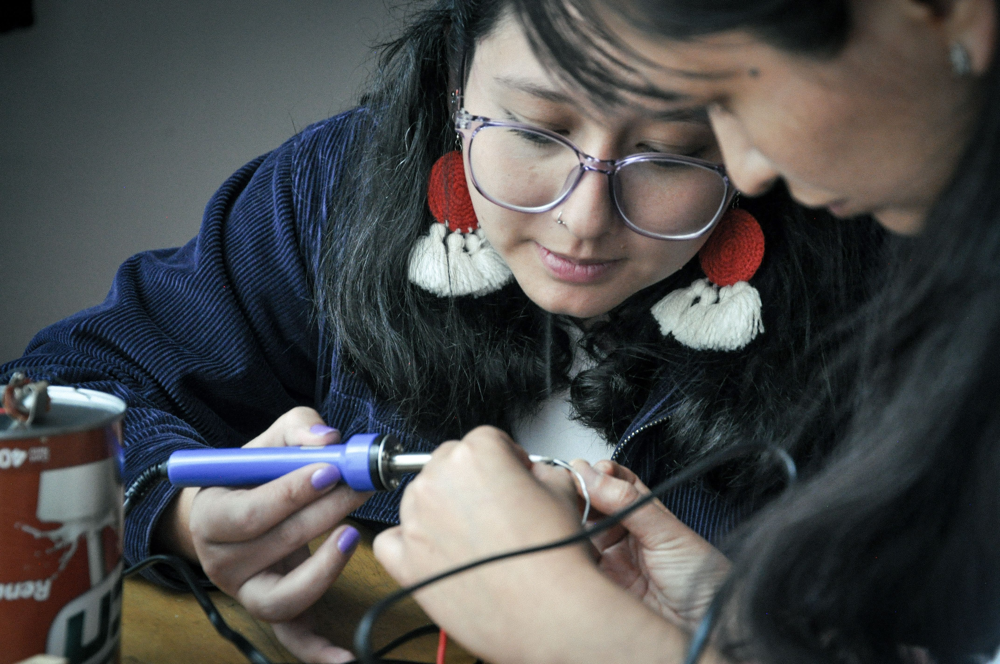
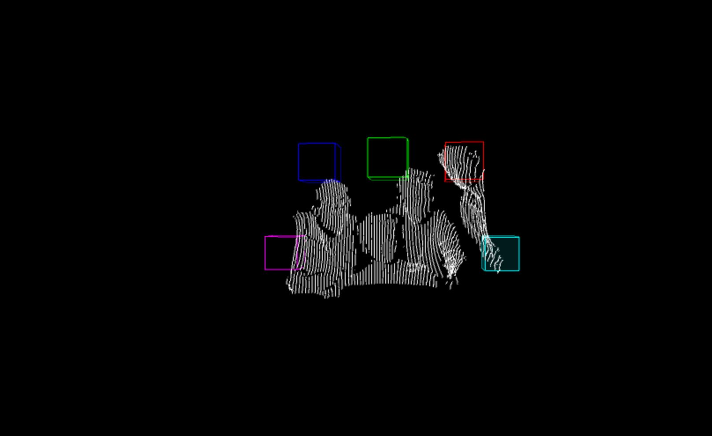
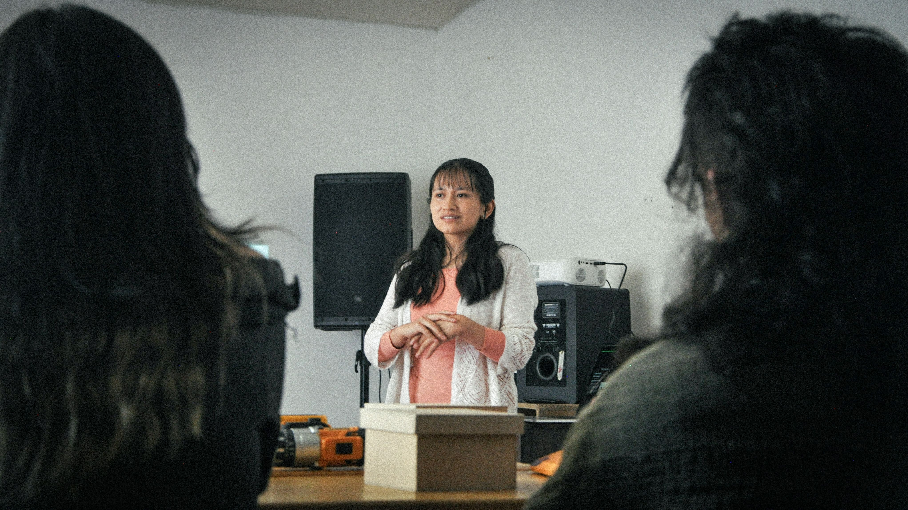
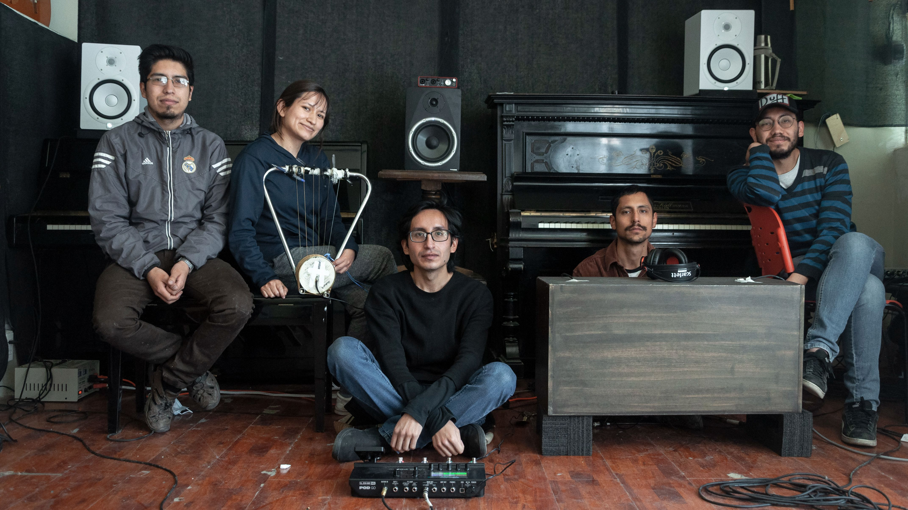
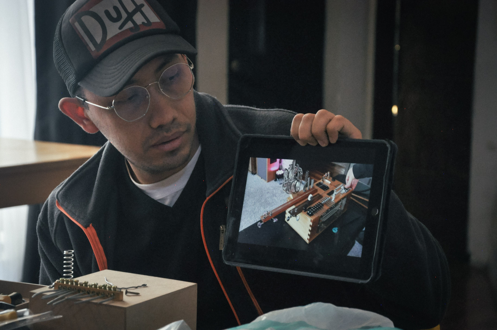

El Ensamble Inmediato es un colectivo de creación e interpretación de música experimental y arte sonoro, integrado por los compositores Jorge Monroy, Mizky Bernal Miranda, José Camacho y Yerko Estevez, cuyas trayectorias se han consolidado mediante su participación en convocatorias, festivales y concursos de proyección internacional, especialmente en el ámbito de la composición contemporánea. Las creaciones del colectivo incluyen instalaciones y esculturas sonoras, improvisación, música de tradición escrita, piezas electroacústicas y piezas site specific. Sus obras exploran diversidad de lenguajes y soportes, teniendo como puntos comunes el paisaje sonoro, la microfonía experimental y la invención de instrumentos.
Desde 2021 hasta la fecha, el colectivo ha interpretado aproximadamente una treintena de obras, muchas de ellas estrenos absolutos, con especial énfasis en partituras compuestas desde inicios del siglo XXI, además de haber creado y gestionado tres instalaciones sonoras de gran escala en diversas ciudades de Bolivia. En 2023, su proyecto denominado "A Través del Aire" ganó la I Convocatoria de Fomento a la Productividad Cultural y la Creación Artística del Centro de la Revolución Cultural de Bolivia. Participaron en distintos festivales, entre los que se destacan, las Jornadas de Música Contemporánea del ABAICAM (2022 al 2025), la Bienal de Arte Sonoro SONANDES (2024), y el ciclo de conciertos Libres en el Sonido (2024, Colombia), además de brindar talleres y conferencias en la Universidad Distrital Francisco José de Caldas en Bogotá.